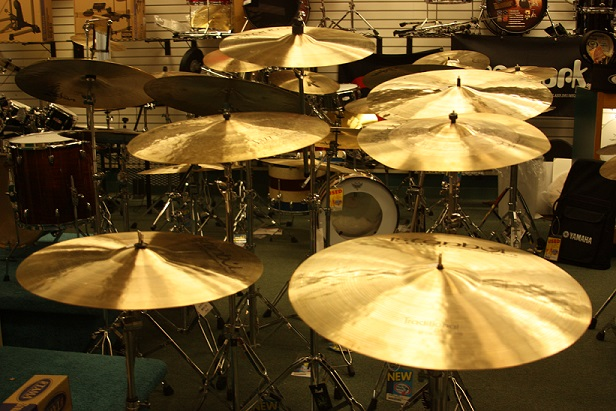

Taste The Music
No.Boundary.For.Your.Soul
Cymbal Selection for Beginner and Intermediate Drummers
Cymbals play an incredibly important role in shaping the overall sound of a drum kit and are as important as the drums themselves. A good quality, well tuned drum kit can be made to sound terrible with poor quality cymbals. Unlike drums, cymbals can't be tuned to fit different musical applications. Once you have a cymbal, there's very little you can do to manipulate its sound. Therefore, shop wisely and choose cymbals that you are confident will work with your drum kit and compliment the music you want to play. This article will explain what you are looking for when shopping for cymbals.
CYMBAL SIZE
Here's a guide to what cymbals you'll need and the size of each.
- Ride - the most important cymbal for jazz music. A large cymbal that ranges from 19 to 24 inches in diameter.
- Hi hats - 2 cymbals of the same size that are played together. The bottom hi hat is usually thicker and heavier than the top one. Common sizes range from 13 to 15 inches in diameter.
- Crash - large cymbals with a fast attack used for accents. Sizes range from 14 to 20 inches.
- Splash - small cymbals used in a similar way to crash cymbals. Sizes range from 6 to 12 inches
- China - harsh trashy sounding cymbals with a curved bow. They can come in both splash or crash sizes.
A basic cymbal set consists of a ride, a pair of hi hats, and one crash. Later on you may wish to bolster your musical palette with more crashes, splashes, or effects cymbals such a China cymbals.
BRANDS
A lot of very good cymbal brands make a wide range of cymbals at a variety of prices. However, there are also brands that don't meet the same stringent quality control standards.
Here is a list of cymbal brands that I have played and would recommend:
- Istanbul Agop
- Istanbul Mehmet
- Bosphorus
- Zildjian
- Sabian
- Meinl
- Paiste
Zildjian, Paiste, Sabian and Meinl are commercially available all over the world and are successful in part due to their roster of endorsed drummers from well known bands around the world. Istanbul and Bosphorus are slightly less commercial but offer brilliant quality, often at a slightly more competitive price.
FINAL THOUGHTS
These brands are a good place to start if you are looking for a cymbal set. The most important thing is that you go and try these cymbals out. If you can, do go and play them before you buy. No two cymbals are the same, and it's important that you know what you're buying. If you decide to buy second hand (which I would recommend if you're looking for higher end cymbals), make sure that you check for damage such as:
- Cracks
- Dents
- Keyholing (around the cymbal hole)
- Warped edges